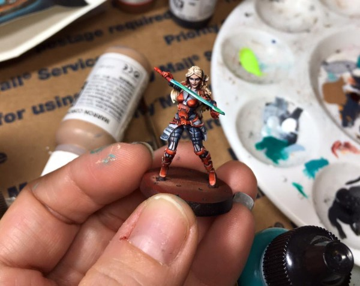
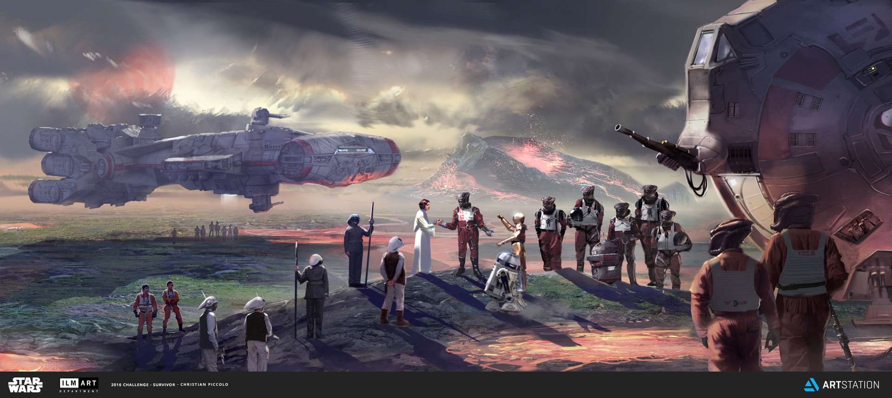
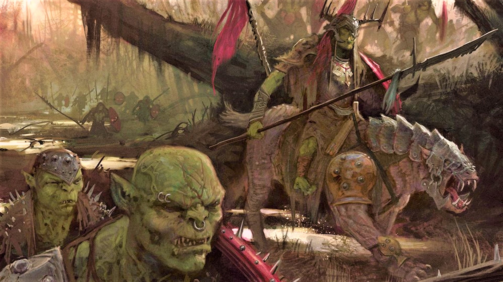
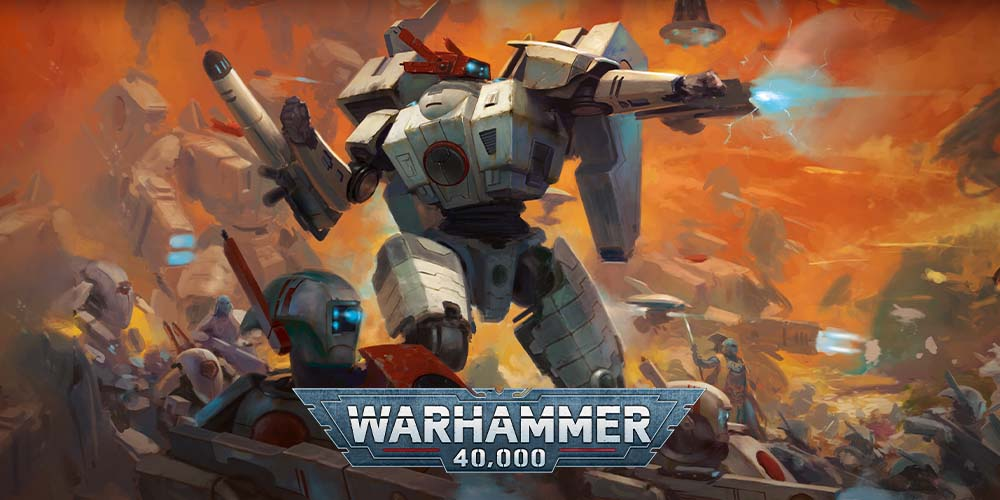

Focusing in: Star Wars Legion, Warhammer: Age of Sigmar, and Warhammer 40,000

In order to have a creative outlet during my sometimes formulaic jobs, I picked up miniature modeling with my best friend.
Seperately we build and paint miniatures from numerous games and universes, as well as battle against each other on the tabletop.
If you'd like to see some of my work, you can click one of the icons below!
The Rebel Alliance: Wickstrom's Raiders

"We, the Rebel Alliance, do therefore in the name—and by the authority—of the free beings of the Galaxy, solemnly publish and declare our intentions:
To fight and oppose you and your forces, by any and all means at our disposal;
To refuse any Imperial law contrary to the rights of free beings;
To bring about your destruction and the destruction of the Galactic Empire;
To make forever free all beings in the galaxy.
To these ends, we pledge our property, our honor, and our lives."
―Declaration of Rebellion
Kruleboyz Orks: Da Foggy Boggurds

Kruleboyz are a cunning, but brutal faction of orruks, who make their homes in the swamps and bogs of the realms. Often described as "Morruks" for their kinship to Mork, they encourage "hard finkin" and pride themselves on tactical acts of cruelty.
The Kharadron Overlords are a nation of Dwarves who abandoned their mountain holds in the Realm of Metal to flee the horrors of the Age of Chaos by taking to the skies.
The Kharadron Overlords are militaristic, mercantile Duardin who dominate the skies of the Mortal Realms upon gigantic skyvessels and floating sky-ports held aloft by a mix of engineering prowess, burgeoning science and industrialised magic.
The T'au Empire: Dal'yth Sept

The T’au Empire (or Tau Empire) is a rapidly expanding interstellar nation, sometimes referred to as a Commonwealth by its own citizens. Founded by a ruling caste called the Ethereals, who lead the Tau empire in the
name of the Greater Good.
Before being settled by the Tau Empire, Dal'yth had a wild ecosystem of deep foliage and slithering segmented beasts. It was tamed long ago and has been brought into compliance
with prime-level colony standards ever since. Because of its high proportion of diplomats and merchants, Dal'yth has enjoyed beneficial trade agreements and has recently been counted as one of the Nineteen wonders of the
Tau Empire.
Software Development
Get Coding - Halifax, NS
It's this website! A place for me to showcase my work, utilizing HTML, CSS, and a sprinkling of Javascript
You don't need me to describe it to you, explore the tabs above :D
Data Analysis and Cloud Computing
WYWM Academy - Halifax, NS
With You With Me (WYWM) is a veteran-focused transition training and education organization, advertised by the Canadian Armed Forces for helping members transition to tech fields.
Through a number of courses over multiple months focusing on building real-world products, I gained certificates in the following skills: